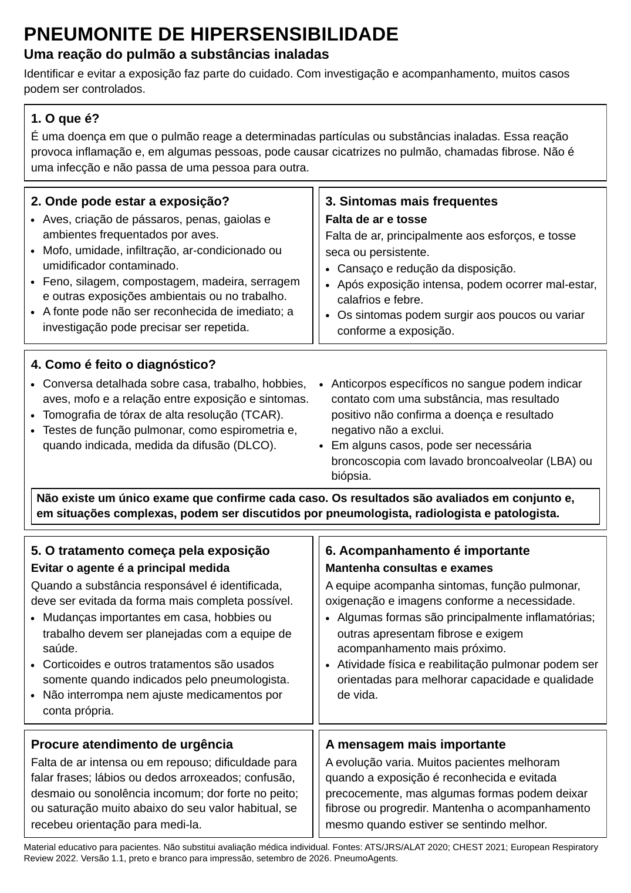

Pneumonite de hipersensibilidade

Ler o texto do infográfico
Uma reação do pulmão a substâncias inaladas. Identificar e evitar a exposição faz parte do cuidado. Com investigação e acompanhamento, muitos casos podem ser controlados.
1. O que é?
É uma doença em que o pulmão reage a determinadas partículas ou substâncias inaladas. Essa reação provoca inflamação e, em algumas pessoas, pode causar cicatrizes no pulmão, chamadas fibrose. Não é uma infecção e não passa de uma pessoa para outra.
2. Onde pode estar a exposição?
- Aves, criação de pássaros, penas, gaiolas e ambientes frequentados por aves.
- Mofo, umidade, infiltração, ar-condicionado ou umidificador contaminado.
- Feno, silagem, compostagem, madeira, serragem e outras exposições ambientais ou no trabalho.
- A fonte pode não ser reconhecida de imediato; a investigação pode precisar ser repetida.
3. Sintomas mais frequentes
Falta de ar e tosse. Falta de ar, principalmente aos esforços, e tosse seca ou persistente.
- Cansaço e redução da disposição.
- Após exposição intensa, podem ocorrer mal-estar, calafrios e febre.
- Os sintomas podem surgir aos poucos ou variar conforme a exposição.
4. Como é feito o diagnóstico?
- Conversa detalhada sobre casa, trabalho, hobbies, aves, mofo e a relação entre exposição e sintomas.
- Tomografia de tórax de alta resolução (TCAR).
- Testes de função pulmonar, como espirometria e, quando indicada, medida da difusão (DLCO).
- Anticorpos específicos no sangue podem indicar contato com uma substância, mas resultado positivo não confirma a doença e resultado negativo não a exclui.
- Em alguns casos, pode ser necessária broncoscopia com lavado broncoalveolar (LBA) ou biópsia.
Não existe um único exame que confirme cada caso. Os resultados são avaliados em conjunto e, em situações complexas, podem ser discutidos por pneumologista, radiologista e patologista.
5. O tratamento começa pela exposição
Evitar o agente é a principal medida. Quando a substância responsável é identificada, deve ser evitada da forma mais completa possível.
- Mudanças importantes em casa, hobbies ou trabalho devem ser planejadas com a equipe de saúde.
- Corticoides e outros tratamentos são usados somente quando indicados pelo pneumologista.
- Não interrompa nem ajuste medicamentos por conta própria.
6. Acompanhamento é importante
Mantenha consultas e exames. A equipe acompanha sintomas, função pulmonar, oxigenação e imagens conforme a necessidade.
- Algumas formas são principalmente inflamatórias; outras apresentam fibrose e exigem acompanhamento mais próximo.
- Atividade física e reabilitação pulmonar podem ser orientadas para melhorar capacidade e qualidade de vida.
Procure atendimento de urgência
Falta de ar intensa ou em repouso; dificuldade para falar frases; lábios ou dedos arroxeados; confusão, desmaio ou sonolência incomum; dor forte no peito; ou saturação muito abaixo do seu valor habitual, se recebeu orientação para medi-la.
A mensagem mais importante: a evolução varia. Muitos pacientes melhoram quando a exposição é reconhecida e evitada precocemente, mas algumas formas podem deixar fibrose ou progredir. Mantenha o acompanhamento mesmo quando estiver se sentindo melhor.
Material educativo para pacientes. Não substitui avaliação médica individual. Fontes: ATS/JRS/ALAT 2020; CHEST 2021; European Respiratory Review 2022.